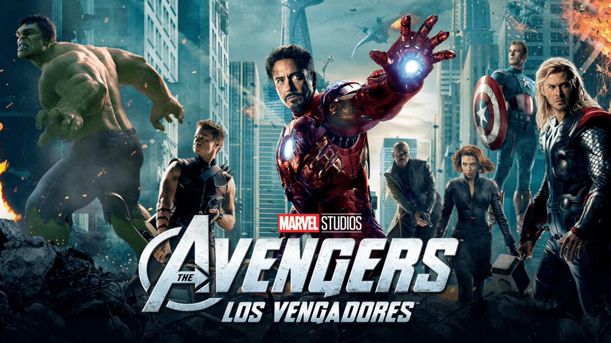

-

-

- 
-


Pinnipeds, commonly known as seals,[a] are a widely distributed and diverse clade of carnivorous, fin-footed, semiaquatic marine mammals. They comprise the extant families Odobenidae (whose only living member is the walrus), Otariidae (the eared seals: sea lions and fur seals), and Phocidae (the earless seals, or true seals).

The lion (Panthera leo) is a species in the family Felidae and a member of the genus Panthera. It has a muscular, deep-chested body, short, rounded head, round ears, and a hairy tuft at the end of its tail. It is sexually dimorphic; adult male lions have a prominent mane.

Hawks are a group of medium-sized diurnal birds of prey of the family Accipitridae. Hawks are widely distributed and vary greatly in size. The subfamily Accipitrinae includes goshawks, sparrowhawks, sharp-shinned hawks and others. This subfamily are mainly woodland birds with long tails and high visual acuity. They hunt by dashing suddenly from a concealed perch.